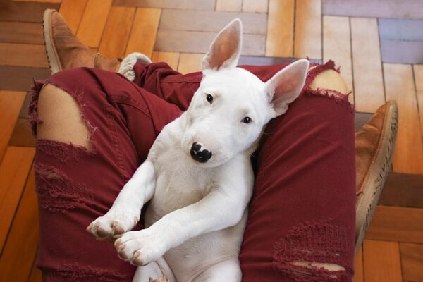

PerroZhorty
Bull Terrier · 3 años
Zhorty llegó a casa cuando era apenas un cachorro. Es el más expresivo de todos — siempre sabe cómo alegrarte el día con su cola en movimiento constante. Le encanta correr en el parque y robar calcetines.